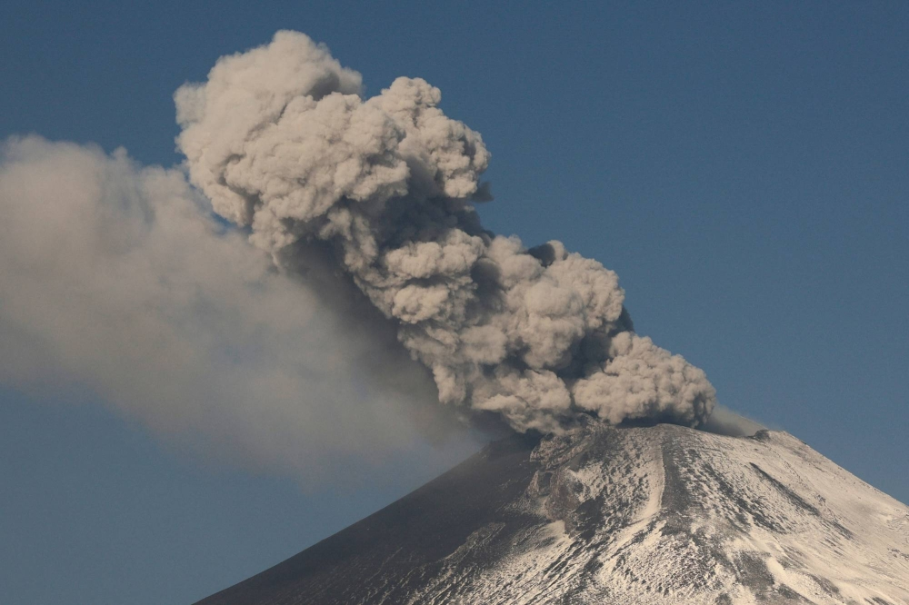
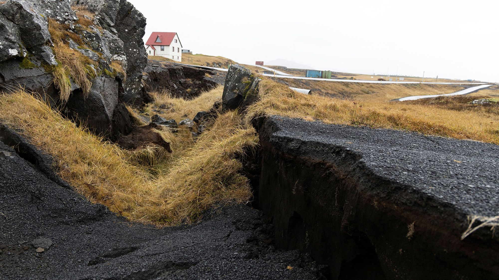

A volcano is an opening in the earth’s crust through which lava, volcanic ash, and gases escape. Volcanic eruptions are partly driven by pressure from dissolved gas, much as escaping gases force the cork out of a bottle of champagne. Beneath a volcano, liquid magma containing dissolved gases rises through cracks in the Earth’s crust. As the magma rises, pressure decreases, allowing the gases to form bubbles.
Volcanoes can be active, dormant, or extinct. Active volcanoes are volcanoes that have had recent eruptions or are expected to have eruptions in the near future. Dormant volcanoes no longer produce eruptions, but might again sometime in the future. Extinct volcanoes will likely never erupt again.
Some types of volcanoes tend to erupt only once (and are called monogenetic), and others erupt multiple times over their lifespan (and are called polygenetic).
Each volcano is somewhat unique, but most volcanoes can be classified into one of several types. The most well-known types of volcanoes are cinder cones, composite volcanoes (stratovolcanoes), and shield volcanoes.
Recently, a striking news about the potential volcano eruption in Iceland caught our attention. Motivated by the need to better understand and analyze the impact of such natural phenomena, we aim to delve into the patterns, trends, and factors surrounding volcanic eruptions, utilizing data science techniques to extract meaningful insights.
Lu Qiu (lq2234)
Zhiyi Zhu (zz3167)
Chen Liang (cl4469)
Ziqiu Liu (zl3386)
Ruoxi Li (rl3401)